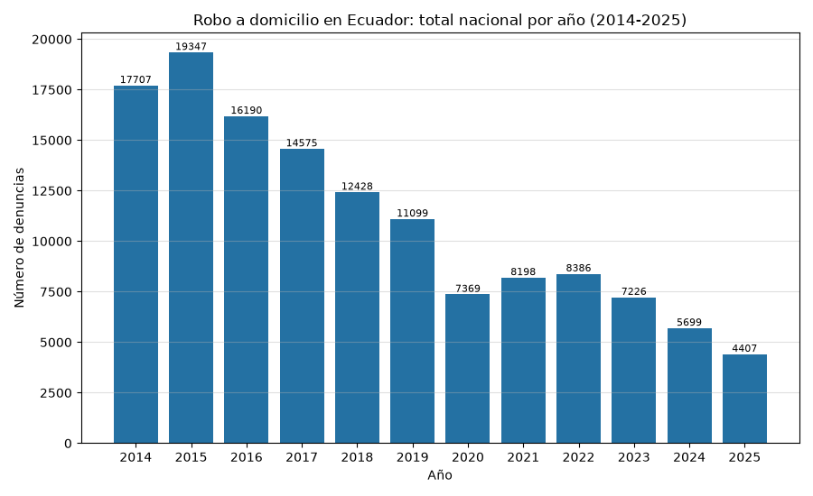
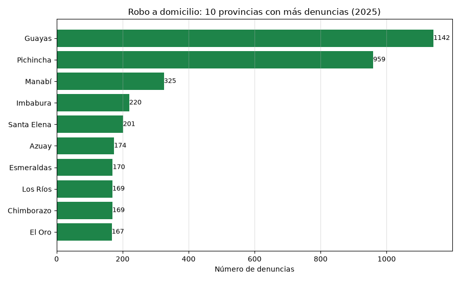

Análisis de Cifras de Seguridad INEC: Robo a Domicilio
Índice
Inicio | Representación IEEE 754
1. Introducción
En esta página se presenta un breve análisis de las estadísticas de robo a domicilio en Ecuador, a partir de los datos abiertos del Instituto Nacional de Estadística y Censos (INEC) publicados en las Estadísticas de Seguridad Integral: Delitos de mayor connotación psicosocial (corte: febrero 2026).
Según el INEC, el robo a domicilio es el "evento que se caracteriza cuando una persona o grupo de personas ingrese a un domicilio ajeno mediante amenazas, violentando o haciendo uso de la fuerza con el fin de sustraer o apoderarse de un bien u objeto que se encuentre en el domicilio o sea parte del bien inmueble, excepto vehículos a motor" (Manual de Conceptualización de Indicadores de Seguridad Ciudadana y Convivencia Pacífica desde el Enfoque de la Prevención, 2015).
2. Descripción de los datos y su procesamiento
El archivo DatosdeSeguridadEcuador.xlsx contiene 13 hojas con los delitos de mayor connotación. Se utiliza la hoja 10.robodomicilio, que registra el número de denuncias de robo a domicilio por cantón de ocurrencia, con una columna por mes desde enero 2014 hasta febrero 2026 (146 meses, 221 cantones).
El procesamiento con pandas consiste en:
- Leer la hoja indicando que el encabezado está en la fila 4
(
header=3) y descartar la primera columna vacía. - Renombrar las tres columnas de identificación (provincia, código DPA, cantón) y eliminar filas sin provincia.
- Separar la fila Total Nacional del detalle cantonal para no duplicar los totales.
- Agregar por mes (serie nacional), por año y por provincia.
Validación: la serie obtenida se contrastó con dos fuentes: (a) la fila Total Nacional del propio Excel y (b) la presentación oficial del INEC de febrero 2026, que reporta 721 denuncias en enero-febrero 2025, 630 en enero-febrero 2026 (variación de -12,6%) y 4.407 en el total de 2025. Los tres valores coinciden con los calculados.
2.1. Carga y limpieza de los datos
# Fuentes: # - pandas.read_excel: https://pandas.pydata.org/docs/reference/api/pandas.read_excel.html # - INEC, Estadisticas de Seguridad Integral: https://www.ecuadorencifras.gob.ec/justicia-y-crimen/ import pandas as pd from datetime import datetime RUTA = '/home/anthonio/MexicoWeather/Datos_de_Seguridad_Ecuador.xlsx' df = pd.read_excel(RUTA, sheet_name='10.robo_domicilio', header=3) df = df.drop(columns=df.columns[0]) # primera columna vacia df = df.rename(columns={df.columns[0]: 'provincia', df.columns[1]: 'codigo_canton', df.columns[2]: 'canton'}) df = df.dropna(subset=['provincia']) # Separar la fila de Total Nacional del detalle por canton total_row = df[df['provincia'] == 'Total Nacional'] df = df[df['provincia'] != 'Total Nacional'] # Columnas de meses (son objetos datetime en el encabezado) month_cols = [c for c in df.columns if isinstance(c, datetime)] print(f"Cantones: {len(df)} | Meses: {len(month_cols)} " f"({month_cols[0].date()} a {month_cols[-1].date()})")
Cantones: 221 | Meses: 146 (2014-01-01 a 2026-02-01)
2.2. Validación de la serie nacional
serie = df[month_cols].sum() serie.index = pd.to_datetime(serie.index) # (a) contraste con la fila Total Nacional del Excel serie_total = total_row[month_cols].iloc[0] serie_total.index = pd.to_datetime(serie_total.index) print("Suma de cantones == fila Total Nacional:", (serie == serie_total).all()) # (b) contraste con la presentacion oficial INEC feb-2026 print("Ene-Feb 2025:", int(serie['2025-01-01'] + serie['2025-02-01']), "(INEC: 721)") print("Ene-Feb 2026:", int(serie['2026-01-01'] + serie['2026-02-01']), "(INEC: 630)") print("Total 2025 :", int(serie[serie.index.year == 2025].sum()), "(INEC: 4.407)")
Suma de cantones == fila Total Nacional: True Ene-Feb 2025: 721 (INEC: 721) Ene-Feb 2026: 630 (INEC: 630) Total 2025 : 4407 (INEC: 4.407)
3. Resultados
3.1. Tabla 1: Total nacional de denuncias por año
anual = serie.groupby(serie.index.year).sum().astype(int) var = anual.pct_change().mul(100).round(1) tabla_anual = [["Año", "Denuncias", "Variación %"]] + [None] + \ [[int(a), int(v), ("" if pd.isna(p) else f"{p:+.1f}%")] for a, v, p in zip(anual.index, anual.values, var.values)]
| Año | Denuncias | Variación % |
|---|---|---|
| 2014 | 17707 | |
| 2015 | 19347 | +9.3% |
| 2016 | 16190 | -16.3% |
| 2017 | 14575 | -10.0% |
| 2018 | 12428 | -14.7% |
| 2019 | 11099 | -10.7% |
| 2020 | 7369 | -33.6% |
| 2021 | 8198 | +11.2% |
| 2022 | 8386 | +2.3% |
| 2023 | 7226 | -13.8% |
| 2024 | 5699 | -21.1% |
| 2025 | 4407 | -22.7% |
| 2026 | 630 | -85.7% |
3.2. Tabla 2: Diez provincias con más denuncias en 2025
cols2025 = [c for c in month_cols if c.year == 2025] top_prov = (df.groupby('provincia')[cols2025].sum().sum(axis=1) .sort_values(ascending=False).head(10).astype(int)) tabla_prov = [["Provincia", "Denuncias 2025"]] + [None] + \ [[prov, int(val)] for prov, val in top_prov.items()]
| Provincia | Denuncias 2025 |
|---|---|
| Guayas | 1142 |
| Pichincha | 959 |
| Manabí | 325 |
| Imbabura | 220 |
| Santa Elena | 201 |
| Azuay | 174 |
| Esmeraldas | 170 |
| Chimborazo | 169 |
| Los Ríos | 169 |
| El Oro | 167 |
3.3. Gráfico 1: Evolución anual del robo a domicilio (2014-2025)
Se excluye 2026 por estar incompleto (solo enero-febrero disponibles).
import matplotlib.pyplot as plt anual_full = anual[anual.index <= 2025] fig = plt.figure(figsize=(9, 5.5)) bars = plt.bar(anual_full.index.astype(str), anual_full.values, color='#2471a3') plt.bar_label(bars, fontsize=8) plt.title('Robo a domicilio en Ecuador: total nacional por año (2014-2025)') plt.xlabel('Año') plt.ylabel('Número de denuncias') plt.grid(axis='y', alpha=0.4) fig.tight_layout() fname = './images/robo_domicilio_anual.png' plt.savefig(fname) fname

3.4. Gráfico 2: Provincias con más denuncias en 2025
top10 = top_prov.sort_values(ascending=True) # barh ordena de abajo hacia arriba fig = plt.figure(figsize=(9, 5.5)) bars = plt.barh(top10.index, top10.values, color='#1e8449') plt.bar_label(bars, fontsize=9) plt.title('Robo a domicilio: 10 provincias con más denuncias (2025)') plt.xlabel('Número de denuncias') plt.grid(axis='x', alpha=0.4) fig.tight_layout() fname = './images/robo_domicilio_provincias.png' plt.savefig(fname) fname

4. Interpretación de resultados
Del procesamiento de los datos se destacan tres hallazgos:
- Tendencia decreciente sostenida: las denuncias de robo a domicilio a nivel nacional pasaron de 19.347 en 2015 (año pico de la serie) a 4.407 en 2025, una reducción acumulada de aproximadamente el 77%. La caída más pronunciada ocurre en 2020 (7.369 denuncias), año de las restricciones de movilidad por la pandemia, con un repunte parcial en 2021-2022 y nuevos descensos desde 2023.
- Continuidad de la tendencia en 2026: el acumulado enero-febrero 2026 (630 denuncias) es 12,6% menor al del mismo período de 2025 (721), consistente con la variación reportada oficialmente por el INEC.
- Concentración territorial: Guayas (1.142) y Pichincha (959) concentran cerca de la mitad de las denuncias de 2025, lo cual es coherente con su peso poblacional; los cantones Quito (808) y Guayaquil (696) encabezan el detalle cantonal.
Limitación metodológica: la fuente registra denuncias ante la Fiscalía General del Estado (SIAF), no hechos ocurridos; parte de la disminución podría estar influida por cambios en la propensión a denunciar. Además, los datos del INEC están "sujetos a variación" según el corte de información.
5. Referencias
- INEC - Estadísticas de Justicia y Crimen: Delitos de mayor connotación
- INEC (2026). Presentación de principales resultados Estadísticas de Seguridad Integral - Febrero 2026. Quito.
- Fiscalía General del Estado - Analítica (SIAF)
- pandas.readexcel - Documentación oficial
- matplotlib barh - Documentación oficial
- Presentar DataFrame como tabla en org-babel